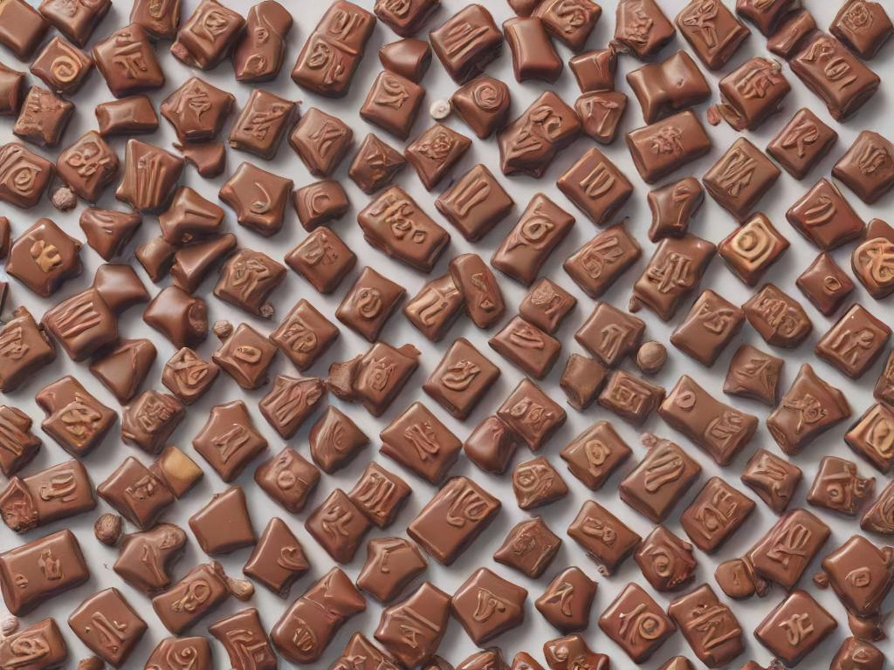

How to create your own Chocolate Bouquets!

A Step-by-Step Guide to Create a Chocolate Bouquet
Materials You Will Need:
- Chocolates (individually wrapped, preferably with stems or small boxes)
- Wooden skewers or toothpicks (for attaching chocolates)
- Floral foam block or Styrofoam
- Tissue paper or crepe paper (in coordinating colors)
- Cellophane wrap (optional)
- Ribbon (for tying)
- Florist tape or scotch tape
- Glue gun or double-sided sellotape
- Decorative container (vase, mug, basket, or flower pot)
- Green or colored paper (optional, for "leaves")
Step 1: Choose Your Chocolates
- Select a variety of chocolates that will fit into your bouquet. You can use different sizes, but it's best to stick to wrapped chocolates to maintain hygiene and aesthetics. Ferrero Rocher, Lindt balls, and small chocolate bars work well.

Step 2: Prepare the Skewers
- For wrapped chocolates: Use double-sided tape or a glue gun to secure the chocolates onto the skewers.
- For boxed chocolates: Use florist tape or tie them on using thin ribbon.
- Ensure the chocolate is secure but not too tight, as you don’t want to damage the packaging.
Step 3: Create the Base
- Place your floral foam or Styrofoam block inside your decorative container. This will act as the base to hold the skewers upright. Make sure it fits snugly so that it doesn’t move around.
Step 4: Wrap the Skewers
- Wrap each skewer with florist tape or tissue paper to cover the wooden stick. If you want to create a more natural look, you can wrap some of the skewers with green paper or florist tape to resemble flower stems
Step 5: Create the Tissue Paper "Flowers"
- Cut tissue paper into squares or circles (about 6-8 inches wide).
- Layer 2-3 sheets of tissue paper on top of each other.
- Wrap the base of each chocolate with the tissue paper by bunching it at the base of the chocolate, and then tape it onto the skewer. This gives the appearance of a flower petal surrounding the chocolate.

Step 6: Insert the Skewers into the Foam
- Start arranging your chocolate-covered skewers into the foam base. Begin with the taller ones in the center and shorter ones around the edges. Push each skewer down into the foam so that it holds firmly.
Step 7: Add Decorative Touches
- Green paper: Cut leaf shapes from the green paper and tape them to some of the skewers, adding a natural look to your bouquet.
- Ribbon: Tie ribbons around some of the skewers or around the base of the bouquet for an elegant finish.
- Cellophane wrap: For a fancier touch, you can wrap the entire bouquet in cellophane and tie it off with a large ribbon bow.
Step 8: Final Adjustments
- Step back and take a look at your bouquet. Make sure the chocolates are evenly spaced, and adjust the height of the skewerss if needed. You can also add small decorative flowers or embellishments for a more vibrant look.
Now your chocolate bouquet is ready to present!

Here are some authentic reviews of how creating a chocolate bouquet has changed people's life!
"I bought a chocolate bouquet for my wife and she said that she will now never leave me!!" - Mr Iam Reel 2024
"I made a bouquet of chocolate and now I am no longer afraid of the dark" - Ben Dover 2024
"Yummy" - Darcie 2024